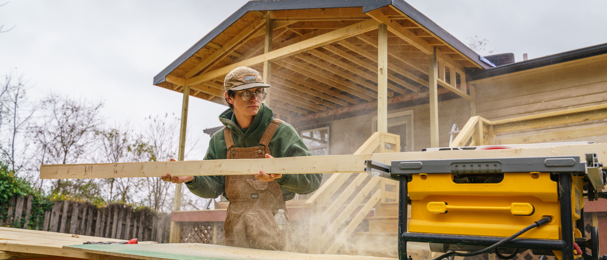

Essential Home Repair Assistance in WNC
We connect qualified homeowners in Western North Carolina with critical repairs to ensure safety, accessibility, and dignity in their homes.

Repair Programs
From roof repairs to wheelchair ramps, we coordinate a network of providers for essential fixes.
Coalition Model
ARCHR combines the resources and expertise of multiple non-profits for greater impact.
Streamlined Process
Our single intake system simplifies the application journey for homeowners and partners.
Eligibility Overview
While each program has specific requirements, general qualifications for ARCHR assistance include:
Location
Home must be located within the Western North Carolina service area (specific counties apply).
Ownership & Occupancy
Applicant must own and live in the home as their primary residence.
Income Guidelines
Household income typically must be at or below 80% of the Area Median Income (AMI).
Repair Type
Repairs must address critical health, safety, or accessibility issues. Cosmetic work is not covered.
Next Steps
This is a general overview. The full application will guide you through detailed eligibility questions. Our partner organizations are here to help.
Start Your ApplicationOur Trusted Coalition Partners
ARCHR is powered by a collaborative network of leading housing and community development organizations in Western North Carolina.
Asheville Habitat for Humanity
Provides home repairs and critical home preservation services.
Mountain Housing Opportunities
Develops, preserves, and finances affordable housing.
Community Action Opportunities
Offers comprehensive support services for low-income families.
Community Ownership Poder Emma
Fosters community ownership and wealth building.
...and several other dedicated local organizations.
Volunteer With ARCHR
Skilled or unskilled, every helping hand strengthens our coalition. Volunteers power repairs, outreach, and the day-to-day operations that keep our neighbors in safe, accessible homes.
Build Days
Join hands-on repair crews on scheduled work days. No experience required — partner organizations lead each site.
Outreach
Help us reach homeowners who need us. Canvas neighborhoods, staff community events, and translate intake materials.
Skilled Support
Lend a profession — licensed contractors, social workers, designers, and grant writers can all contribute their expertise.
Ready to Sign Up?
Fill out our volunteer interest form and an ARCHR coordinator will reach out with current opportunities that match your skills and availability.
Volunteer Sign-Up